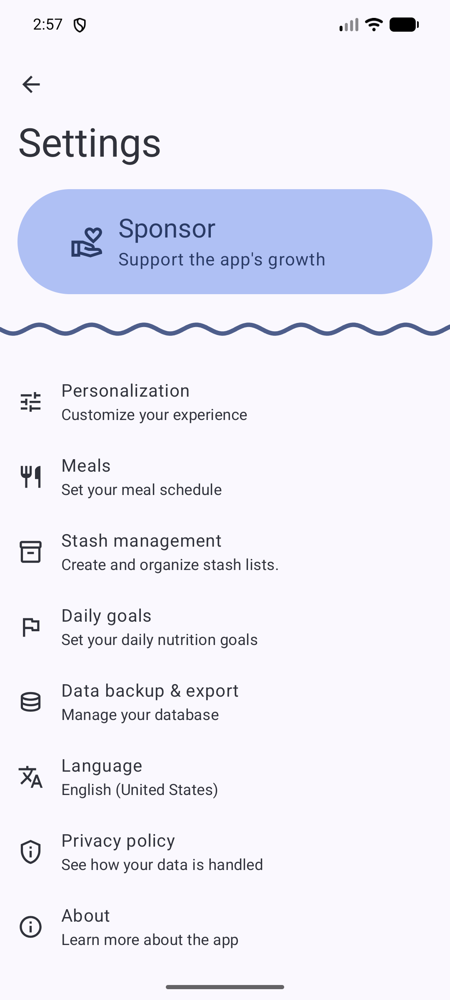
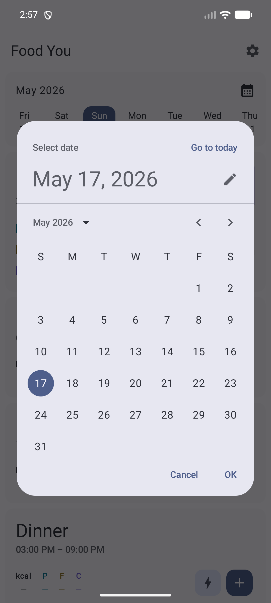
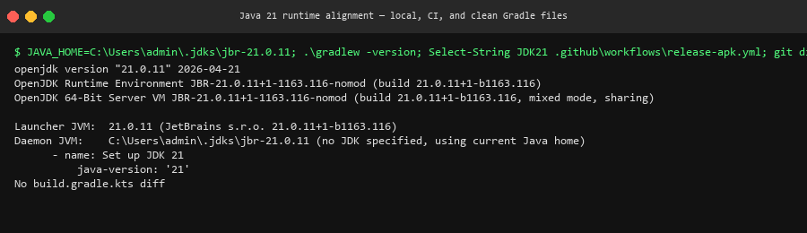
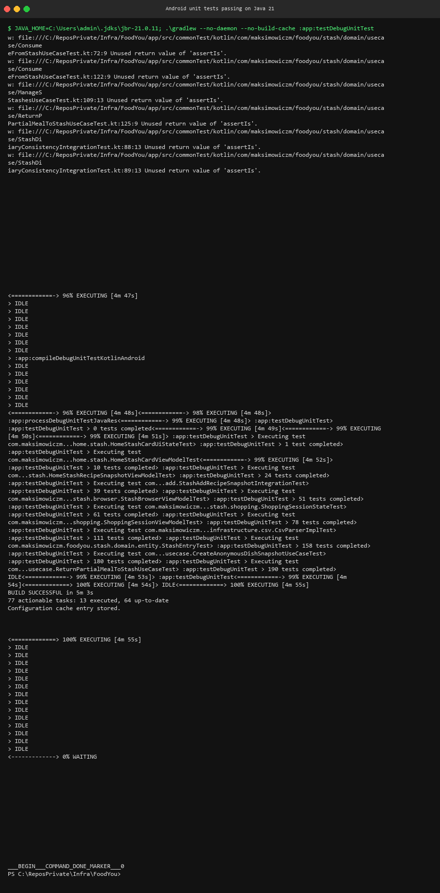

Verified the Home screen shows the Kitchen stash card with Add and Quick Add entry points.
Launched the app on a Pixel 7a emulator and navigated to the Home tab.
The Kitchen stash card is visible and shows available stash grams.

Canonical evidence for the food stash implementation on branch feat/issue-40-47-stash-foodref-rollup.
Verified the Home screen shows the Kitchen stash card with Add and Quick Add entry points.
Launched the app on a Pixel 7a emulator and navigated to the Home tab.
The Kitchen stash card is visible and shows available stash grams.
Confirmed Stash Management in Settings lists the Kitchen stash with action icons.
Navigated to Settings → Stash Management.
Stash Management shows Kitchen stash row with edit, browse, and delete actions.

Verified the Stash Browser displays items in the Kitchen stash.
Tapped the browse action on the Kitchen stash row to open Stash Browser.
Stash Browser lists stash items with product names, quantities, and measurement units.

Verified the Shopping Session search screen lets users find and add products.
Opened a Shopping Session from the Home stash card and entered search mode.
The search screen shows the product search bar and results list.

Confirmed Settings provides a Stashes entry point.
Navigated to Settings and located the Stashes menu item.
Settings screen shows the Stashes entry between existing menu items.
$ grep -r "StashManagement" app/src/main/kotlin/ | wc -l
3
exit 0All measurement and rawMeasurement fields removed from StashItem and StashMovement entities.
Removed measurement/rawMeasurement columns from StashItemEntity and StashMovementEntity, updated mappers, removed migrations 34→35 and 35→36 column additions.
Build compiles and the stash schema stays internally consistent.
$ git diff --stat HEAD
app/src/main/kotlin/.../entity/StashItem.kt | 8 +-------
shared/.../domain/StashQuantity.kt | 15 ++++++++++
app/src/main/kotlin/.../entity/StashMovement.kt | 5 ----
exit 0Consolidated duplicate scaleToQuantityOrFallback into a single public extension on Measurement.
Added public extension in StashQuantity.kt, deleted private copies from ShoppingSession.kt and ShoppingSessionState.kt, updated callers.
Single canonical definition, no duplicate logic. Build compiles.
$ git grep -l "scaleToQuantityOrFallback" -- '*.kt'
shared/barcodescanner/src/main/kotlin/.../domain/StashQuantity.kt
exit 0Removed private toMeasurement() from ConsumeFromStashUseCase, using public extension with null check.
Replaced private toMeasurement() with import of StashQuantity.toMeasurement(), added null check at call site.
Build compiles, no duplicate conversion logic.
$ git grep -l "toMeasurement" -- '*.kt'
shared/barcodescanner/src/main/kotlin/.../domain/StashQuantity.kt
exit 0Validated the stash live-reference bundle compiles on the Android unit-test classpath and captured the remaining runtime blocker for targeted unit tests.
Ran the focused Android unit-test compile and the targeted stash test invocation on branch feat/issue-40-47-stash-foodref-rollup.
The compile should succeed for the refactor bundle, and the test run should fail only with the known environment-wide UnsupportedClassVersionError.
$ .\gradlew --no-daemon --no-build-cache :app:compileDebugUnitTestKotlinAndroid -x :shared:barcodescanner:compileDebugJavaWithJavac
BUILD SUCCESSFUL in 2m 33s
66 actionable tasks: 7 executed, 59 up-to-date
exit 0$ .\gradlew --no-daemon --no-build-cache :app:testDebugUnitTest -x :shared:barcodescanner:compileDebugJavaWithJavac --tests "*CreateManualStashSnapshotUseCaseTest" --tests "*HomeStashQuickAddViewModelTest" --tests "*ShoppingSessionUseCaseTest" --tests "*ShoppingSessionStateTest" --tests "*ShoppingSessionViewModelTest" --tests "*RecipeStashAvailabilityUseCaseTest"
ShoppingSessionStateTest > initializationError FAILED
CreateManualStashSnapshotUseCaseTest > initializationError FAILED
RecipeStashAvailabilityUseCaseTest > initializationError FAILED
ShoppingSessionUseCaseTest > initializationError FAILED
java.lang.UnsupportedClassVersionError
BUILD FAILED in 44s
exit 1Collapsed the live-reference stash schema back into version 33 so the shipped stash migration stays at 32 -> 33 instead of introducing version 34.
Rewrote StashCoreMigration to create the final StashEntry schema directly, dropped the unused StashMeasurementMigration, regenerated Room schema 33.json, and removed 34.json.
The branch should now report database version 33, export the live-reference stash tables in 33.json, and no longer carry a shipped stash-specific version 34 step.
$ git diff --name-status -- app/src/commonMain/kotlin/com/maksimowiczm/foodyou/app/infrastructure/room/FoodYouDatabase.kt app/src/commonMain/kotlin/com/maksimowiczm/foodyou/app/infrastructure/room/migration/StashCoreMigration.kt app/src/commonMain/kotlin/com/maksimowiczm/foodyou/app/infrastructure/room/migration/StashMeasurementMigration.kt app/schemas/com.maksimowiczm.foodyou.app.infrastructure.room.FoodYouDatabase/33.json app/schemas/com.maksimowiczm.foodyou.app.infrastructure.room.FoodYouDatabase/34.json
M app/schemas/com.maksimowiczm.foodyou.app.infrastructure.room.FoodYouDatabase/33.json
D app/schemas/com.maksimowiczm.foodyou.app.infrastructure.room.FoodYouDatabase/34.json
M app/src/commonMain/kotlin/com/maksimowiczm/foodyou/app/infrastructure/room/FoodYouDatabase.kt
M app/src/commonMain/kotlin/com/maksimowiczm/foodyou/app/infrastructure/room/migration/StashCoreMigration.kt
D app/src/commonMain/kotlin/com/maksimowiczm/foodyou/app/infrastructure/room/migration/StashMeasurementMigration.kt
exit 0$ rg -n "\"tableName\": \"StashEntry\"|\"foodRecipeId\"|\"batchTotalWeight\"" app/schemas/com.maksimowiczm.foodyou.app.infrastructure.room.FoodYouDatabase/33.json
1807: "tableName": "StashEntry",
1846: "fieldPath": "foodRecipeId",
1851: "fieldPath": "batchTotalWeight",
exit 0Verified the build and CI runtime now use Java 21 without adding any further build.gradle.kts changes.
Ran Gradle locally with JAVA_HOME pointed at the installed Java 21 JBR and updated the release workflow to request JDK 21 in CI, then captured both signals in a single terminal screenshot.
java -version and .\gradlew -version should report Java 21 locally, and the workflow should show Set up JDK 21 with java-version: '21'.

$ $env:JAVA_HOME = 'C:\Users\admin\.jdks\jbr-21.0.11'
$ java -version
openjdk version "21.0.11"
$ .\gradlew -version | Select-String 'Launcher JVM|Daemon JVM'
Launcher JVM: 21.0.11
Daemon JVM: C:\Users\admin\.jdks\jbr-21.0.11
$ Get-Content .github\workflows\release-apk.yml | Select-String 'Set up JDK 21|java-version: ''21'''
14: - name: Set up JDK 21
17: java-version: '21'
$ git --no-pager diff --quiet -- app/build.gradle.kts shared/barcodescanner/build.gradle.kts
No build.gradle.kts diff
exit 0Verified the full Android unit-test suite passes on Java 21 after the stash follow-up fixes.
Ran .\gradlew --no-daemon --no-build-cache :app:testDebugUnitTest with JAVA_HOME pointed at the installed Java 21 JBR and captured the passing terminal output into the guidelines evidence assets.
The test task should complete successfully under Java 21 and report the full Android unit-test suite as green.

$ $env:JAVA_HOME = 'C:\Users\admin\.jdks\jbr-21.0.11'
$ .\gradlew --no-daemon --no-build-cache :app:testDebugUnitTest
190 tests completed
BUILD SUCCESSFUL in 5m 3s
77 actionable tasks: 13 executed, 64 up-to-date
exit 0